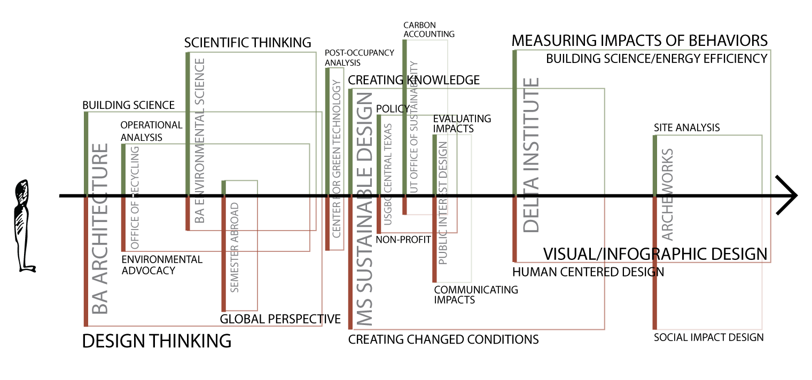

I am a creative thinker -- equal parts designer and researcher -- driven by work that makes the world more sustainable and equitable.

My excitement for digging into data and dissecting the intricacies of complex systems is only topped by my passion for using visual design to translate complex information to inspire others to act.